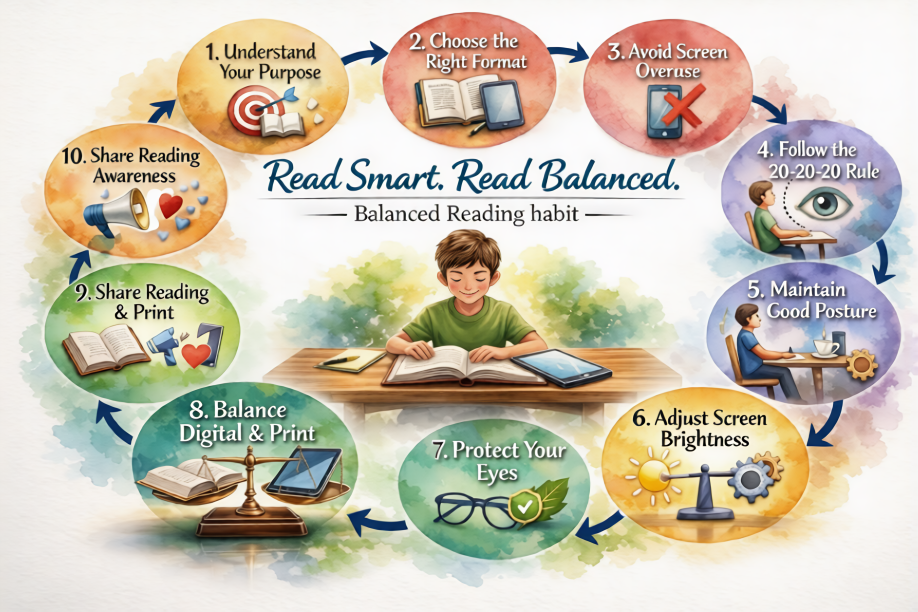

✔ Do’s & Don’ts
📘 Step-by-Step Guides

🛡 Safety Practices
✔ Choose the Right Reading Format
Use printed books for long study sessions and eBooks for short, quick reading to reduce eye strain.
Use printed books for long study sessions and eBooks for short, quick reading to reduce eye strain.
✔ Maintain Proper Lighting
Always read in a well-lit environment. Avoid reading in dark or dim places, especially on screens.
Always read in a well-lit environment. Avoid reading in dark or dim places, especially on screens.
✔ Follow the 20-20-20 Rule
Every 20 minutes, look at something 20 feet away for 20 seconds to protect your eyes.
Every 20 minutes, look at something 20 feet away for 20 seconds to protect your eyes.
✔ Maintain Correct Posture
Sit straight with proper back support. Keep books and screens at eye level.
Sit straight with proper back support. Keep books and screens at eye level.
✔ Limit Screen Time
Avoid excessive use of eBooks. Balance digital reading with printed books for healthy habits.
Avoid excessive use of eBooks. Balance digital reading with printed books for healthy habits.
✔ Take Regular Breaks
Short breaks help reduce fatigue, improve concentration, and prevent health risks.
Short breaks help reduce fatigue, improve concentration, and prevent health risks.
👥 Real-Life Stories
Case Study: “Books vs Screen” Group Discussion
The group discussion on “Books vs Screen” compared printed books and digital screens in learning and reading habits. Participants agreed that books improve focus and deep understanding, while screens offer convenience and quick access but may cause distractions. The discussion concluded that both are useful depending on the purpose—books for concentration and screens for speed and accessibility.